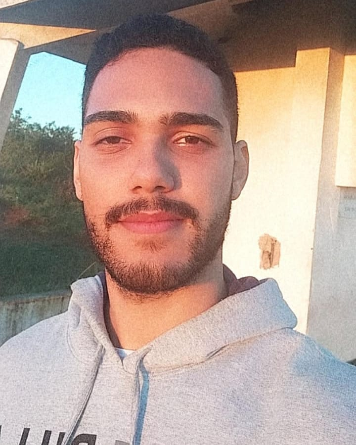

Guilherme Rodrigues Galdino

SOBRE ⤵
HABILIDADES ⤵
CANAIS ⤵
Olá, meu nome é Guilherme ! Sou de Colatina - ES. Atualmente estudo desenvolvimento de software na Trybe, e também estou concluindo o bacharelado de Engenharia Mecânica no Centro Universitário do Espírito Santo (UNESC). Apaixonado por Tecnologia e Empreendedorismo, em tempo livre curto Games, Filmes, e Youtube.
HABILIDADES üôÖ‚Äç‚ôÇÔ∏è
- Determinação
- Proatividade
- Autoconfiança
- Inteligência Emocional
- Criatividade e Inovação
- Capacidade de Adaptação
VEJA MINHA FOTO üòä
⬆Subir⬆
CANAIS QUE ACOMPANHO üì∫
Toguro ▶️
Gabriel Monteiro ▶️
Buyanhold Brasil ▶️
Raiam Santos ▶️